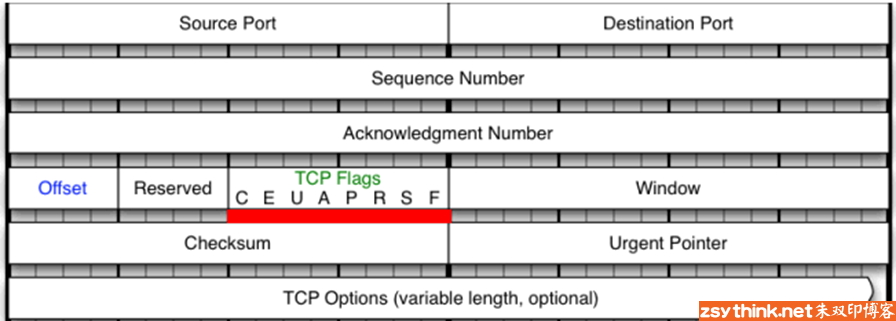

iptables
1. iptables
参考文章 iptables详解 备链
iptables其实不是真正的防火墙,我们可以把它理解成一个客户端代理,用户通过iptables这个代理,将用户的安全设定执行到对应的"安全框架"中,这个"安全框架"才是真正的防火墙,这个框架的名字叫netfilter.
netfilter才是防火墙真正的安全框架,netfilter位于内核空间.
iptables其实是一个命令行工具,位于用户空间,我们用这个工具操作真正的框架.
netfilter是Linux操作系统核心层内部的一个数据包处理模块,它具有如下功能：
-
网络地址转换(Network Address Translate)
-
数据包内容修改
-
以及数据包过滤的防火墙功能
1.1 iptables基础
iptables是按照规则来办事的,所谓规则一般的定义为:
"如果数据包头符合这样的条件,就这样处理这个数据包".规则存储在内核空间的信息包过滤表中,这些规则分别指定了 源地址 、目的地址 、传输协议(如TCP、UDP、ICMP) 和 服务类型(如HTTP、FTP和SMTP) 等.
当数据包与规则匹配时,
iptables就根据规则所定义的方法来处理这些数据包,如 放行(accept) 、拒绝(reject) 和 丢弃(drop) 等.配置防火墙的主要工作就是添加、修改和删除这些规则.
iptables配置的通常就是所说的 四表五链 .
四表: (另外security表不常用,主要用于数据包上应用 SELinux )
raw: 关闭nat表上启用的连接追踪机制; iptable_rawmangle: 拆解报文, 做出修改, 并重新封装 的功能；iptable_manglenat: network address translation,网络地址转换功能；；iptable_natfilter: 负责过滤功能,防火墙；内核模块：iptables_filter
这5张表的优先级从高到低是：
raw->mangle->nat->filter[->security]需要注意的是,
iptables不支持用户自定义表,但支持自定义链.
五链 (标记表的执行优先级次序):
PREROUTING:raw-->mangle-->natINPUT:mangle-->filter(centos7中还有nat表,centos6中没有).FORWARD:mangle- ->filterOUPUT:raw-->mangle-->nat-->filterPOSTROUTING:mangle-->nat
以上看出各个链有对应的表,而且表和表上的规则是有优先级的, 在实际操作使用时,往往是通过操作iptables这些表,对规则进行定义的.

1.2 规则概念
根据指定的匹配条件来尝试匹配每个流经此处的报文,一旦匹配成功,则由规则后面指定的处理动作(target)进行处理.如果不匹配将顺延匹配下一条.
1.2.1 匹配条件
匹配条件分为 基本匹配条件 与 扩展匹配条件
基本匹配条件:
- 源地址: Source IP
- 目标地址: Destination IP
扩展匹配条件：
除了上述的条件可以用于匹配,还有很多其他的条件可以用于匹配,这些条件泛称为 扩展条件 ,这些扩展条件其实也是netfilter中的一部分,只是以模块的形式存在,如果想要使用这些条件,则需要依赖对应的扩展模块.
-
源端口:Source Port
-
目标端口:Destination Port
1.2.2 处理动作
处理动作在iptables中被称为target(这样说并不准确,我们暂且这样称呼),
动作也可以分为 基本动作 和 扩展动作.
此处列出一些常用的动作：
-
ACCEPT：允许数据包通过.
-
DROP：直接丢弃数据包,不给任何回应信息,这时候客户端会感觉自己的请求泥牛入海了,过了超时时间才会有反应.
-
REJECT：拒绝数据包通过,必要时会给数据发送端一个响应的信息,客户端刚请求就会收到拒绝的信息.
-
SNAT：源地址转换,解决内网用户用同一个公网地址上网的问题.
-
MASQUERADE：是SNAT的一种特殊形式,适用于动态的、临时会变的ip上.
-
DNAT：目标地址转换.
-
REDIRECT：在本机做端口映射.
-
LOG：在
/var/log/messages文件中记录日志信息,然后将数据包传递给下一条规则,也就是说除了记录以外不对数据包做任何其他操作,仍然让下一条规则去匹配.
2. iptables规则
2.1 规则管理
2.1.1 规则查询
# 查看filter表的所有规则
# -t 指定表
# -L 列出链的规则,如果不指定链,则显示所有
$ iptables -t filter -L
# 查看filter表中INPUT链的规则
$ iptables -t filter -L INPUT
# -v选项,查看更多的,更详细的信息,
# -x选项表示显示计数器的精确值.
$ iptables -t filter -vxL
# 默认是对IP地址进行名称解析
# -n直接显示IP地址,不进行名称解析
$ iptables -t filter -nvL
# --line-numbers 显示行号,可用--line
$ iptables -t filter -nvL --line-numbers
Chain FORWARD (policy DROP 0 packets, 0 bytes)
num pkts bytes target prot opt in out source destination
1 4 296 DOCKER-USER all -- * * 0.0.0.0/0 0.0.0.0/0
2 4 296 DOCKER-ISOLATION-STAGE-1 all -- * * 0.0.0.0/0 0.0.0.0/0
3 0 0 ACCEPT all -- * docker0 0.0.0.0/0 0.0.0.0/0 ctstate RELATED,ESTABLISHED
链后面括号中的含义:
- policy表示当前链的默认策略,
policy ACCEPT表示上图中INPUT的链的默认动作为ACCEPT - packets表示当前链默认策略匹配到的包的数量,
0 packets表示默认策略匹配到0个包 - bytes表示当前链默认策略匹配到的所有包的大小总和.
规则条目参数:
- pkts: 对应规则匹配到的报文的个数.
- bytes: 对应匹配到的报文包的大小总和.
- target: 规则对应的target,往往表示规则对应的"动作",即规则匹配成功后需要采取的措施.
- prot: 规则对应的协议,是否只针对某些协议应用此规则.
- opt: 规则对应的选项.
- in: 数据包由哪个接口(网卡)流入,我们可以设置通过哪块网卡流入的报文需要匹配当前规则.
- out: 数据包由哪个接口(网卡)流出,我们可以设置通过哪块网卡流出的报文需要匹配当前规则.
- source: 规则对应的源头地址,可以是一个IP,也可以是一个网段.
- destination: 规则对应的目标地址.可以是一个IP,也可以是一个网段
2.1.2 规则的增删改
# 添加一条规则,表示在filter表的INPUT链追加一条丢弃来自192.168.1.111的规则
# -A: 追加
# -I: 插入表头,可指定位置,在链名后面添加相应数字即可.
# -s: 源地址
# -j: 动作
$ iptables -t filter -A INPUT -s 192.168.1.111 -j DROP
# 根据规则的编号删除规则.
# -D: 删除
$ iptables -t filter -D INPUT 2
# 根据匹配条件去删除规则,NOTE: 有坑,建议选删除再增加.
$ iptables -t filter -D INPUT -s 192.168.1.111 -j DROP
# 清空filter 表的规则
# -F flush 冲刷清除之意.
$ iptables -t filter -F input
# 修改规则
# -R 修改指定条目序号的规则,注意: 必须指定匹配规则,虽然已指定的序号.
$ iptables -t filter -R INPUT 1 -s 192.168.1.111 -j REJECT
2.1.3 保存规则
在默认的情况下,我们对"防火墙"所做出的修改都是"临时的",换句话说就是,当重启iptables服务或者重启服务器以后,我们平常添加的规则或者对规则所做出的修改都将消失,为了防止这种情况的发生,我们需要将规则"保存"
# 规则默认保存在 /etc/sysconfig/iptables
$ service iptalbes save
# 使用iptables-save并不能保存当前的iptables规则,但是可以将当前的iptables规则以"保存后的格式"输出到屏幕上
# 配合重定向可以自己保存.
$ iptables-save
# 重新载入为当前iptables规则
$ iptables-restore
# 或
$ iptables-restore < /etc/sysconfig/iptables
2.2 规则匹配条件
注意: 不指定源或目标地址,均默认为
0.0.0.0/0多个匹配条件,为"与"关系
2.2.1 源地址
# 单个源地址
$ iptables -t filter -I INPUT -s 192.168.1.111 -j DROP
# 多个源地址,采用','分开,且不能包含空格
$ iptables -t filter -I INPUT -s 192.168.1.111,192.168.1.112 -j DROP
# 指定具体IP地址,还能指定网段
$ iptables -t filter -I INPUT -s 192.168.0.0/16 -j DROP
# 还可以对匹配条件取反,加'!'号
$ iptables -t filter -I INPUT ! -s 192.168.1.111 -j DROP
2.2.2 目标地址
# -d 指定目标地址匹配条件
# 丢弃192.168.1.111发往 192.168.1.120的报文
# 同源地址,目标地址操作,也可以指定多个IP地址(用','分隔),也可以取反,也可以指定网段.
$ iptables -t filter -I INPUT -s 192.168.1.111 -d 192.168.1.120 -j DROP
2.2.3 协议类型
-p指定协议
默认是所有协议-p all)
支持的协议有: tcp, udp, udplite, icmp, icmpv6, esp, ah, sctp, mh等.
2.2.4 网卡接口
-i 指定匹配报文网卡流入,匹配报文是通过哪块网卡流入本机的,只能作用于PREROUTING、INPUT、FORWARD
-o指定匹配报文网卡流出,匹配报文将从哪个网卡流出,只能用于FORWARD、OUTPUT、POSTROUTING.
默认是所有网卡
2.2.5 扩展匹配条件
源端口和目标端口属于扩展匹配条件,如果想要使用扩展匹配条件,则需要依赖一些扩展模块.
2.2.5.1 匹配端口
在使用--dport,--sport之前,我们使用-m选项,指定了对应的扩展模块为tcp,也就是说,如果想要使用--dport,--sport这个扩展匹配条件,则必须依靠某个扩展模块完成.
当使用-p选项指定了报文的协议时,如果在没有使用-m指定对应的扩展模块名称的情况下,使用了扩展匹配条件, iptables默认会调用与-p选项对应的协议名称相同的模块
- 目标端口: 使用选项
--dport可以匹配报文的目标端口,--dport意为destination-port,即表示目标端口. - 源端口: 使用选项
--sport可以匹配报文的源端口,--sport表示source-port,即表示源端口.
扩展匹配条件是可以取反的,同样是使用"!"进行取反,比如 ! --dport 22,表示目标端口不是22的报文将会被匹配到.
--sport,--dsport,都能够指定一个端口范围,比如,--dport 22:25表示目标端口为22到25之间的所有端口.
同时指定多个离散的端口,需要借助另一个扩展模块,multiport模块
2.2.5.2 匹配多个离散的端口
- 使用
multiport模块的--sports扩展条件同时指定多个离散的源端口.iptables -t filter -I INPUT -s 192.168.1.111 -p tcp -m multiport --dports 22,36,80 -j DROP - 使用
multiport模块的--dports扩展条件同时指定多个离散的目标端口iptables -t filter -I INPUT -s 192.168.1.111 -p tcp -m multiport --sports 22,36,80 -j DROP
2.2.5.3 iprange扩展模块
使用-s选项或者-d选项即可匹配报文的源地址与目标地址,而且在指定IP地址时,可以同时指定多个IP地址,每个IP用"逗号"隔开,但是,-s选项与-d选项并不能一次性的指定一段连续的IP地址范围,
如果我们需要指定一段连续的IP地址范围,可以使用iprange扩展模块,扩展匹配条件可以使用--src-range,--dst-range
iptables -t filter -I INPUT -m iprange --src-range 192.168.1.111-192.168.1.120 -j DROP
iptables -t filter -I INPUT -m iprange --dst-range 192.168.1.111-192.168.1.120 -j DROP
2.2.5.4 string扩展模块
使用string扩展模块,可以指定要匹配的字符串,如果报文中包含对应的字符串,则符合匹配条件
--algo：用于指定匹配算法,可选的算法有bm与kmp,此选项为必须选项,我们不用纠结于选择哪个算法,但是我们必须指定一个.
--string：用于指定需要匹配的字符串.
2.2.5.5 time扩展模块
我们可以通过time扩展模块,根据时间段区匹配报文,如果报文到达的时间在指定的时间范围以内,则符合匹配条件.
--timestart指定起始时间. 格式 xx.xx.xx
--timestop指定结束时间.
--monthdays 指定月份的哪一号,多个用,隔开
--weekdays 指定星期几,多个用,隔开 Mon, Tue, Wed, Thu, Fri, Sat, Sun
--datestart 指定日期开始时间
--datestop指定日期结束时间
NOTE: --monthdays与--weekdays可以使用"!"取反,其他选项不能取反
2.2.5.6 connlimit扩展模块
使用connlimit扩展模块,可以限制每个IP地址同时链接到server端的链接数量
注意：我们不用指定IP,其默认就是针对"每个客户端IP",即对单IP的并发连接数限制.
--connlimit-above 2表示限制每个IP的链接数量上限为2
--connlimit-upto含义与! --commlimit-above的含义相同,即链接数量未达到指定的连接数量之意"--
--connlimit-mask限制"某类网段"的链接数量.connlimit-mask 24表示某个C类网段,没错,mask为掩码之意,所以将24转换成点分十进制就表示255.255.255.0
2.2.5.7 limit扩展模块
limit模块是对"报文到达速率"进行限制的. 限制单位时间内流入的包的数量.
--limit可以以秒为单位进行限制,也可以以分钟、小时、天作为单位进行限制.
可以选择的时间单位/second,/minute,/hour,/day
--limit-burst可以指定"空闲时可放行的包的数量"
2.2.5.8 扩展条件之-tcp-flags
注：需要对tcp协议的基础知识有一定的了解,比如：tcp头的结构、tcp三次握手的过程.
见名知义,"--tcp-flags"指的就是tcp头中的标志位,看来,在使用iptables时,我们可以通过此扩展匹配条件,去匹配tcp报文的头部的标识位,然后根据标识位的实际情况实现访问控制的功能.
如下图,在使用iptables时,使用tcp扩展模块的"--tcp-flags"选项,即可对上图中的标志位进行匹配,判断指定的标志位的值是否为"1".
--tcp-flags tcp头的标志有SYN,ACK,FIN,RST,URG,PSH,默认ALL表示全部.
iptables -t filter -I INPUT -p tcp -m tcp --dport 22 --tcp-flags ALL SYNC -j REJECT

2.2.5.9 扩展模块之UDP扩展与ICMP扩展
-
UDP扩展
--sport与--dport,即匹配报文的源端口与目标端口.iptables -t filter -I INPUT -p udp -m udp --dport 136 0j ACCEPT -
ICMP扩展
--icmp-type选项表示根据具体的type与code去匹配对应的icmp报文.--icmp-type 8/0表示icmp报文的type为8,code为0才会被匹配到,也就是只有ping请求类型的报文才能被匹配到.iptables -t filter -I INPUT -p icmp -m icmp --icmp-type 8/0 -j REJECT iptables -t filter -I INPUT -p icmp --icmp-type 8 -j REJECT iptables -t filter -I OUTPUT -p icmp -m icmp --icmp-type 0/0 -j REJECT iptables -t filter -I OUTPUT -p icmp --icmp-type 0 -j REJECT iptables -t filter -I INPUT -p icmp --icmp-type "echo-request" -j REJECTsee icmp扩展
2.2.5.10 扩展模块之state扩展
state模块可以让iptables实现"连接追踪"机制.那么,既然是"连接追踪",则必然要有"连接".
state模块的连接而言,"连接"其中的报文可以分为5种状态:
- NEW：连接中的第一个包,状态就是NEW,我们可以理解为新连接的第一个包的状态为NEW.
- ESTABLISHED：我们可以把NEW状态包后面的包的状态理解为ESTABLISHED,表示连接已建立.
- RELATED：从字面上理解
RELATED译为关系,但是这样仍然不容易理解,我们举个例子. 比如FTP服务,FTP服务端会建立两个进程,一个命令进程,一个数据进程. 命令进程负责服务端与客户端之间的命令传输(我们可以把这个传输过程理解成state中所谓的一个"连接",暂称为"命令连接"). 数据进程负责服务端与客户端之间的数据传输 ( 我们把这个过程暂称为"数据连接" ). 但是具体传输哪些数据,是由命令去控制的,所以,"数据连接"中的报文与"命令连接"是有"关系"的. 那么,"数据连接"中的报文可能就是RELATED状态,因为这些报文与"命令连接"中的报文有关系. (注：如果想要对ftp进行连接追踪,需要单独加载对应的内核模块nf_conntrack_ftp,如果想要自动加载,可以配置/etc/sysconfig/iptables-config文件) - INVALID：如果一个包没有办法被识别,或者这个包没有任何状态,那么这个包的状态就是INVALID,我们可以主动屏蔽状态为INVALID的报文.
- UNTRACKED：报文的状态为untracked时,表示报文未被追踪,当报文的状态为Untracked时通常表示无法找到相关的连接.
iptables -t filter -I INPUT -m state --state RELATED,ESTABLISHED -j ACCEPT
2.3 黑白名单机制
白名单机制: 我们就要把所有人都当做坏人,只放行好人. 黑名单机制: 我们就要把所有人都当成好人,只拒绝坏人.
# 更改链的默认规则
# -P 选项
$ iptables -t filter -P INPUT DROP
2.4 自定义链
自定义链并不能直接使用,而是需要被默认链引用才能够使用
# 创建自定义链,
# -N
# 表示在filter表中增加一个NEW_CHAIN的链
# NOTE: 但是自定义链并未被引用
$ iptables -t filter -N NEW_CHAIN
# 引用
# NEW_CHAIN被INPUT链引用.
# 表明所有目的端口为80的报文由NEW_CHAIN去匹配
$ iptables -I INPUT -p tcp --dport 80 -j NEW_CHAIN
# 重命名自定义链
# -E 可以修改自定义链名
iptables -t filter -E NEW_CHAIN MY_CHAIN
# 删除自定义链
# -X 删除对应的自定义链
# 首先得删除引用,使自定义链引用为0,
# 其次清空自定义链规则
# 最后删除自定义链
$ iptables -t filter -D INPUT 1
$ iptables -t filter -F MY_CHAIN
$ iptables -t filter -X MY_CHAIN
2.5 网络防火墙
防火墙从逻辑上讲, 可以分为主机防火墙与网络防火墙。
主机防火墙：针对于单个主机进行防护。 网络防火墙： 往往处于网络入口或边缘, 针对于网络入口进行防护, 服务于防火墙背后的本地局域网。
#如果想要iptables作为网络防火墙,iptables所在主机开启核心转发功能,以便能够转发报文.
#使用如下命令查看当前主机是否已经开启了核心转发,0表示为开启,1表示已开启
cat /proc/sys/net/ipv4/ip_forward
#使用如下两种方法均可临时开启核心转发,立即生效,但是重启网络配置后会失效.
方法一：echo 1 > /proc/sys/net/ipv4/ip_forward
方法二：sysctl -w net.ipv4.ip_forward=1
#使用如下方法开启核心转发功能,重启网络服务后永久生效.
配置/etc/sysctl.conf文件(centos7中配置/usr/lib/sysctl.d/00-system.conf文件),在配置文件中将 net.ipv4.ip_forward设置为1
#由于iptables此时的角色为"网络防火墙",所以需要在filter表中的FORWARD链中设置规则.
#可以使用"白名单机制",先添加一条默认拒绝的规则,然后再为需要放行的报文设置规则.
#配置规则时需要考虑"方向问题",针对请求报文与回应报文,考虑报文的源地址与目标地址,源端口与目标端口等.
#示例为允许网络内主机访问网络外主机的web服务与sshd服务.
iptables -A FORWARD -j REJECT
iptables -I FORWARD -s 10.1.0.0/16 -p tcp --dport 80 -j ACCEPT
iptables -I FORWARD -d 10.1.0.0/16 -p tcp --sport 80 -j ACCEPT
iptables -I FORWARD -s 10.1.0.0/16 -p tcp --dport 22 -j ACCEPT
iptables -I FORWARD -d 10.1.0.0/16 -p tcp --sport 22 -j ACCEPT
#可以使用state扩展模块,对上述规则进行优化,使用如下配置可以省略许多"回应报文放行规则".
iptables -A FORWARD -j REJECT
iptables -I FORWARD -s 10.1.0.0/16 -p tcp --dport 80 -j ACCEPT
iptables -I FORWARD -s 10.1.0.0/16 -p tcp --dport 22 -j ACCEPT
iptables -I FORWARD -m state --state ESTABLISHED,RELATED -j ACCEPT
2.6 动作
"动作"与"匹配条件"一样,也有"基础"与"扩展"之分,使用扩展动作也需要借助扩展模块,但是,扩展动作可以直接使用,不用像使用"扩展匹配条件"那样指定特定的模块.
ACCEPT与DROP都属于基础动作,而REJECT则属于扩展动作.
2.6.1 动作REJECT
动作也有自己的选项,以下以REJECT为例.
iptables -I INPUT 2 -j REJECT --reject-with icmp-host-unreachable
REJECT动作的常用选项为--reject-with,设置提示信息
- icmp-port-unreachable(不设置任何值时,默认此值)
- icmp-net-unreachable
- icmp-host-unreachable
- icmp-proto-unreachable
- icmp-net-prohibited
- icmp-host-pro-hibited
- icmp-admin-prohibited
2.6.2 动作LOG
使用LOG动作,可以将符合条件的报文的相关信息记录到日志中,但当前报文具体是被"接受",还是被"拒绝",都由后面的规则控制,
换句话说,LOG动作只负责记录匹配到的报文的相关信息,不负责对报文的其他处理,如果想要对报文进行进一步的处理,可以在之后设置具体规则,进行进一步的处理
iptables -I INPUT -p tcp --dport 22 -j LOG
可以查看/var/log/messages
也可以将相关信息记录在指定的文件中,以防止iptables的相关信息与其他日志信息相混淆,修改/etc/rsyslog.conf文件(或者/etc/syslog.conf),
在rsyslog配置文件中添加如下配置即可.
#报文相关信息会记录在 /var/log/iptables.log文
$ vim /etc/rsyslog.conf
kern.warning /var/log/iptables.log
# 服务重启生效
$ service rsyslog restart
LOG动作也有自己的选项,常用选项如下
--log-level选项可以指定记录日志的日志级别,可用级别有emerg,alert,crit,error,warning,notice,info,debug.
--log-prefix选项可以给记录到的相关信息添加"标签"之类的信息,以便区分各种记录到的报文信息,方便在分析时进行过滤.
注：--log-prefix对应的值不能超过29个字符.
2.6.3 动作SNAT
echo 1 > /proc/sys/net/ipv4/ip_forward开始核心转发
iptables -t nat -A POSTROUTING -s 10.1.0.0/16 -j SNAT --to-source 192.168.1.146
意思是将来自于10.1.0.0/16网段的报文的源地址改为公司的公网IP地址.
2.6.4 动作DNAT
iptables -t -I PREROUTING -d 192.168.1.146 -p tcp --dport 3389 -j DNAT --to-destination10.1.0.6:3389
意思是当外网主机访问公司公网IP的3389时,其报文的目标地址与端口将会被映射到10.1.0.6:3389上.
2.6.5 动作MASQUERADE
MASQUERADE会动态的将源地址转换为可用的IP地址,其实与SNAT实现的功能完全一致,都是修改源地址,只不过SNAT需要指明将报文的源地址改为哪个IP,而MASQUERADE则不用指定明确的IP,会动态的将报文的源地址修改为指定网卡上可用的IP地址.
iptables -t nat - POSTROUTING -s 10.1.0.0/16 -o eno50332184 -j MQSQUERADE
表示通过外网网卡出去的报文在经过POSTROUTING链时,会自动将报文的源地址修改为外网网卡上可用的IP地址,这时,即使外网网卡中的公网IP地址发生了改变,也能够正常的、动态的将内部主机的报文的源IP映射为对应的公网IP.
2.6.6 动作REDIRECT
使用REDIRECT动作可以在本机上进行端口映射 比如,将本机的80端口映射到本机的8080端口上
iptables -t nat -A PREROUTING -p tcp --dport 80 -j REDIRECT --to-ports 8080
经过上述规则映射后,当别的机器访问本机的80端口时,报文会被重定向到本机的8080端口上.
NOTE: REDIRECT规则只能定义在PREROUTING链或者OUTPUT链中.
2.7 总结
1. 规则的顺序非常重要.
如果报文已经被前面的规则匹配到,IPTABLES则会对报文执行对应的动作,通常是ACCEPT或者REJECT,报文被放行或拒绝以后,即使后面的规则也能匹配到刚才放行或拒绝的报文,也没有机会再对报文执行相应的动作了(前面规则的动作为LOG时除外),所以,针对相同服务的规则,更严格的规则应该放在前面.
2. 当规则中有多个匹配条件时,条件之间默认存在"与"的关系.
如果一条规则中包含了多个匹配条件,那么报文必须同时满足这个规则中的所有匹配条件,报文才能被这条规则匹配到.
3. 在不考虑1的情况下,应该将更容易且经常被匹配到的规则放置在前面.
比如,你写了两条规则,一条针对sshd服务,一条针对web服务. 假设,一天之内,有20000个请求访问web服务,有200个请求访问sshd服务, 那么,应该将针对web服务的规则放在前面,针对sshd的规则放在后面,因为访问web服务的请求频率更高. 如果将sshd的规则放在前面,当报文是访问web服务时,sshd的规则也要白白的验证一遍,由于访问web服务的频率更高,白白耗费的资源就更多. 如果web服务的规则放在前面,由于访问web服务的频率更高,所以无用功会比较少. 换句话说就是,在没有顺序要求的情况下,不同类别的规则,被匹配次数多的、匹配频率高的规则应该放在前面.
4. 当IPTABLES所在主机作为网络防火 墙时,在配置规则时,应着重考虑方向性,双向都要考虑,从外到内,从内到外.
5. 在配置IPTABLES白名单时,往往会将链的默认策略设置为ACCEPT,通过在链的最后设置REJECT规则实现白名单机制,而不是将链的默认策略设置为DROP,如果将链的默认策略设置为DROP,当链中的规则被清空时,管理员的请求也将会被DROP掉.